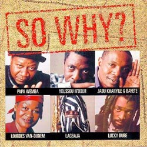

"SO WHY?"
Ведущие музыканты Африки в фильме о трагедиях черного континента
Ведущие музыканты Африки в фильме о трагедиях черного континента
Ноябрь 11 1997 Melvis Dzisah

В деревне в Kwazulu Natal, Южная Африка, женщина средних лет рассказывает звезде регги Lucky Dube о своем опыте вовлеченности в этнический конфликт. "Они пришли ночью с ружьями и тесаками и атаковали спящую деревню," говорит она ему. "Немногие из нас выжили после того, как они ушли утром. Но, что больше всего мучает меня сегодня, это то, что моя дочь после этого повредилась рассудком". Lucky Dube, знаменитая звезда регги, который сам выжил под угрозой апартеида, - почти в слезах слушает травмирующий рассказ женщины.В то время, когда аппартеид и этнические конфликты превратили в кошмар жизнь южноафриканцев, гражданская война имела аналогичный эффект повсюду в Африке.
В Kuito, Angola, 30-летняя вдова показывает фотографию мужчины Lourdes Van Dunem, ведущей певице этой страны: "Он был моим мужем. Его убила бомба, упавшая на наш состав".
12-летний мальчик, держащий боевое оружие AK-47, говорит, что начал убивать людей в шесть лет, "чтобы освободить свою страну", и Van Dunem, которой уже 60, не может больше сдержать слез.
Это лишь некоторые из сцен документального фильма, озаглавленного So Why?, выпущенного 10/9/97 как часть инициативы Международного Красного Креста по борьбе с этнической дискриминацией и конфликтами в Африке. КК пригласил Dube, Van Dunem и других музыкантов в двухнедельное путешествии по проблемным точкам континента. Скрытая камера сопровождала их и записывала все их эмоции и чувства, когда они встречались и общалисьс жертвами гражданских конфликтов. Результатом стал этот 52-минутный фильм.
В лагере на границе северной Кении с Суданом, нигерийский саксофонист Lagbaja присоединился к травмированному исполнителю на kora, чтобы выступить перед тысячами суданских беженцев, вместе с Papa Wemba из Демократической Республики Конго, Van Dunem, и Jabu Khanyile из Южной Африки. Песня имеет особый смысл для одного из беженцев, поскольку пение спасло ему жизнь: "Я был ранен однажды ночью, когда мою деревню в Судане атаковали," - рассказывает он. "Когда наступила ночь, я начал петь, чтобы привлечь внимание прохожего,- который и доставил меня сюда, где мне ампутировали ногу."
На другой стороне континента, в Monrovia, Liberia, сенегалец Youssou N'dour, Papa Wemba и Lagbaja присоединяются к местной группе, все участники которой являются жертвами семи лет гражданского конфликта в их стране, чтобы сыграть композицию, которую они создали вместе - "No More Wars".
"Мотивацией музыкантов, которые были вовлечены в проект, была возможность использовать их огромное влияние, мобилизовать их энергию в борьбе с кровавой этнической дискриминацией в Африке", объясняет Paul-Henri Arni из МКК, который координировал проект.
Центральное послание кампании продемонстрировать важность уважения к жертвам военного и политического насилия. "Это - настоятельный вызов времени, когда много стран противостоят в войнах под эгидой этнического очищения", Arni подчеркивает, добавляя: "Африке нужно открыть глаза на то, что происходит, и музыканты используют свою популярность, чтобы поддержать кампанию."
Документальный фильм - не единственный продукт путешествия музыкантов. Они также выпустили альбом с девятью треками и видео-клипом, носящими то же название. Музыку сочинил Wally Badarou, француз, рожденный в Бенине, и каждый из шести артистов также представил свою работу.
Lucky Dube спел "War and Crime", Papa Wemba спел "Too Many Children Are Dying", Lagbaja спел "Wake Up Africa", Lourdes Van Dunem спела "Panguiame", Youssou N'dour спел "Cassamanca" и Khanyile спел "Khanyisa".
Популярный нигерийский сочинитель, Kole Omotoso, создал книгу для кампании, названную "Woza Африка: Musicians at War", с предисловием Президента Южной Африки Нельсона Манделы. 96-страничная работа, с 70% изображений известных фотографов из разных частей мира и 30% текста, демонстрирует как гражданские конфликты подрывают все аспекты жизни в Африке и отображает процесс создания музыкантами сингла So Why?.
Французская и английская версии были выпущены в продажу в 21 Африканской стране в ноябре-декабре 1997. МКК сообщает, что он инвестировал $300,000 в это предприятие. "Что объединило музыкантов и МКК - это решимость запустить мощную кампанию, которая мобилизует людей на то, чтобы изменить ход вещей",- подчеркивает гуманитарная организация.
Чтобы гарантировать, что послание дойдет до каждого, КК распространил 20,000 лент и 1,000 CD бесплатно на национальных радио- и теле-станциях в Африке. Артисты согласовали, что доходы от продажи So Why? должно пойти на поддержку кампании благотворительной организации против этнических конфликтов в Африке.
Репортеры, приглашенные на предварительный просмотр фильма, были поражены тем, что некоторые картины, свидетелями которых они были на полях войны, были воспроизведены вновь перед ними. "Я вновь увидела, что произошло в Либерии", сказала Elizabeth Blunt из BBC. "Я надеюсь те, кто начинали эти конфликты, соберутся посмотреть этот фильм. Он больно ударит по их совести".
Международный Красный Крест согласился, что это как раз то, чего они собирались добиться.
Mission: Youssou N'Dour в Ziguinchor
Май 13 1998
Женева - Ведущий cенегальский музыкант Youssou N'Dour нанес визит в Ziguinchor, главный город в провинции Casamance южного Сенегала, по приглашению ICRC и Сенегальского Красного Креста, за несколько дней до 8 Мая, дня Международного Красного Креста и Красного Полумесяца.
В течение своего визита сенегальская звезда представляла "Music goes to war", документальный фильм по заглавному треку альбома So Why?, ученикам средней школы в Ziguincаhor. Фильм отслеживает путешествие шести африканских музыкантов, которые написали и исполнили песни в альбоме и, благодаря инициативе ICRC, встречались с жертвами конфликтов Африканского континента (в ЮАР, Анголе, Либерии и Кении). После показа документального фильма певец исполнил песню "Solidarite" и 2,000 слушателей немедленно присоединились к нему.
В ближайшие месяцы добровольцы Сенегальского КК будут организовывать дальнейшие показы фильма в районах около Ziguinchor. На этих встречах 20,000 копий брошюры, разработанной ICRC, с информацией о Красном Кресте и его принципах будут распределены среди школьников.
Youssou N'Dour также принял участие в открытии нового Центра здоровья КК в Ziguinchor, названного в честь основателя Красного Креста Henry Dunant, 170-я годовщина рождения которого празднуется 8 мая. Центр, построенный в результате сотрудничества Сенегальского КК и ICRC, даст нуждающемуся местному населению доступ к базовой медицинской помощи.
Наконец, музыкант посетил пациентов в местной больнице в Ziguinchor, где количество раненых увеличилось после возобновления летом 1997 военных действий между Сенегальской армией и Движением Демократических Сил Casamance.
Сотни поврежденных людей обратились туда, и ICRC поставила с ноября 1997 свыше 1,700 кг медицинского оборудования. Youssou N'Dour был особенно потрясен видом трехлетней девочки, которая потеряла ногу от взрыва мины.
Послесловие (необходимое)
Мне хочется, чтобы определенные аспекты существования этнической музыки находились в доступной области памяти и не возникало необходимости об`яснять, почему большинство африканцев умирает, не дожив до 30, не переставая улыбаться и танцевать в рекламных фильмах об экзотических красотах туризма.
1999 translated by sahua.